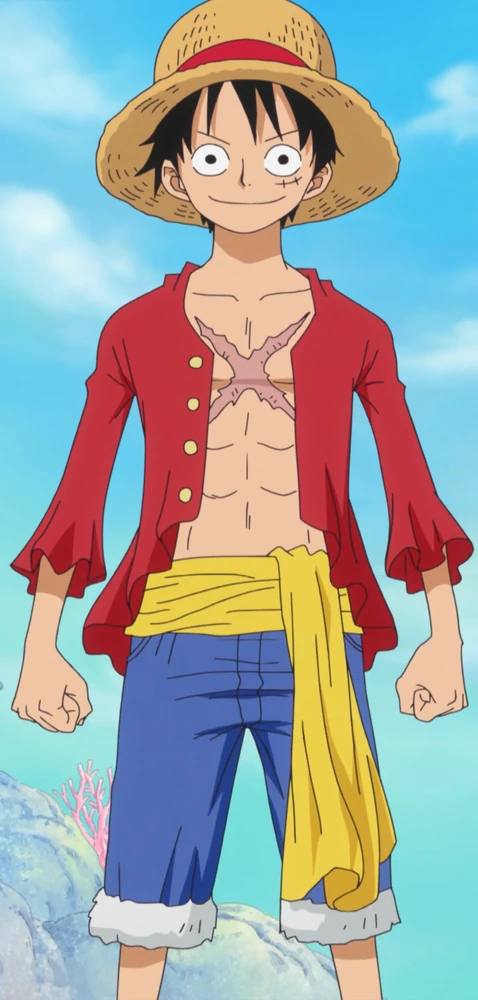
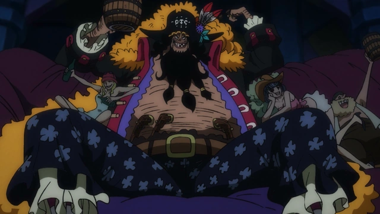

Monkey D. Luffy (モンキー・Ｄ・ルフィ), más conocido como Luffy «Sombrero de Paja» (麦わらのルフィ), es el protagonista principal de la serie de manga y anime One Piece. Es el capitán y fundador de los Piratas de Sombrero de Paja así como un de los Cuatro Emperadores que gobiernan los mares del Nuevo Mundo. Comió una fruta del diablo llamada fruta Gomu Gomu, que le convirtió en un hombre de goma.
Marshall D. Teach (マーシャル・D・ティーチ), más conocido como Barbanegra (黒ひげ Kurohige) es el capitan de los Piratas de Barbanegra y uno de los Cuatro Emperadores que gobiernan los mares del Nuevo Mundo, estatus que consolidó tras su victoria en la Batalla de la Venganza frente a los Piratas de Barbablanca.
